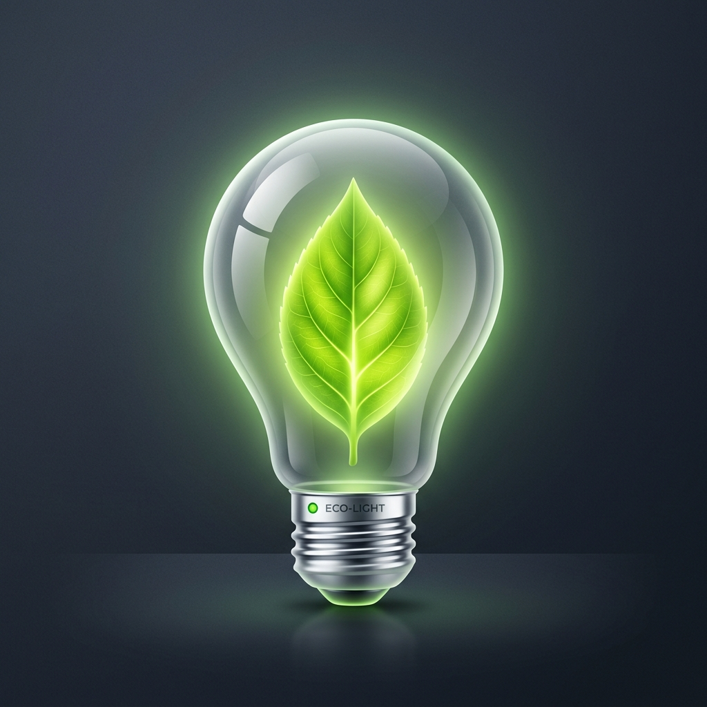
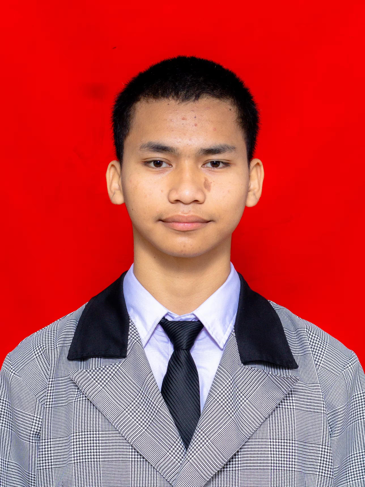
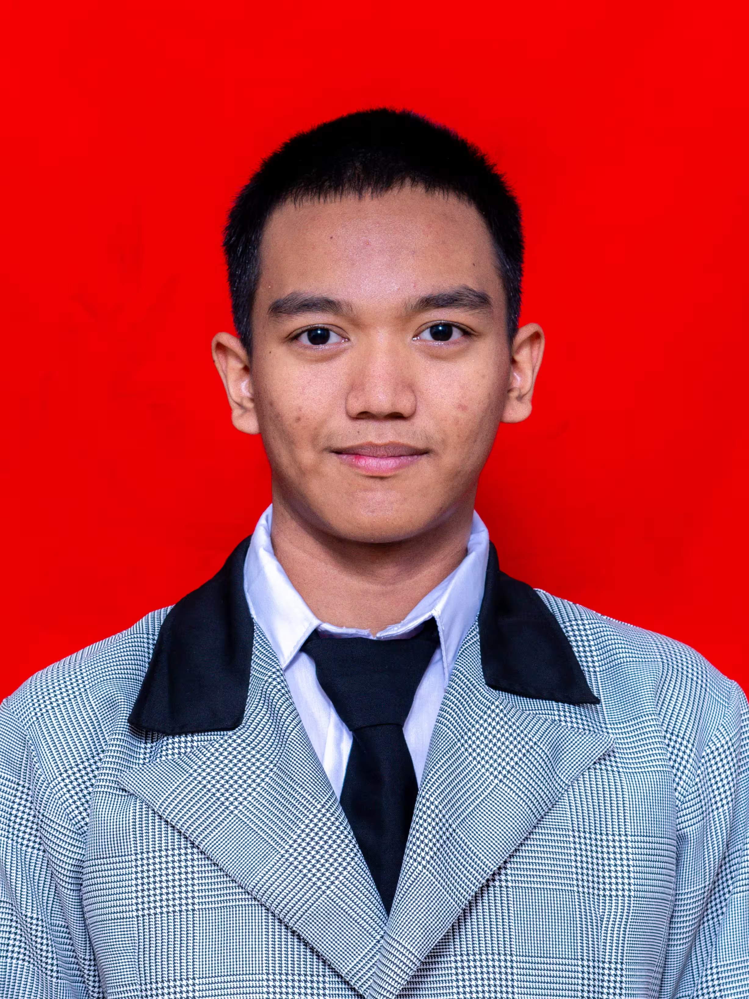

Tentang Redaksi Bumi Bernapas
Inisiatif riset dan media pembelajaran interaktif untuk mendorong penerapan Gaya Hemat Berkelanjutan di lingkungan masyarakat dan sekolah.
Latar Belakang Gerakan
Perubahan iklim global dan peningkatan suhu bumi menjadi tantangan nyata yang kita hadapi hari ini. Sebagian besar emisi gas rumah kaca dihasilkan dari konsumsi energi bahan bakar fosil dan pemborosan daya sehari-hari.
Melalui media Bumi Bernapas, kami bertujuan memberikan pemahaman intuitif lewat artikel populer dan instrumen interaktif bahwa setiap aksi kecil seperti mematikan lampu, mengurangi sampah plastik, dan menggunakan energi secara bijak memberikan kontribusi nyata bagi pemulihan ekosistem.

Visi & Misi Utama
Visi Redaksi
Mewujudkan budaya masyarakat yang sadar energi, minim emisi, dan aktif mempraktikkan gaya hidup ramah lingkungan melalui jurnal edukasi secara konsisten dan berkelanjutan.
Misi
- Menyajikan publikasi artikel edukasi dan data observasi yang ilmiah namun mudah dipahami.
- Menyediakan instrumen interaktif checklist aksi hemat & kalkulator dampak bagi setiap individu.
- Mengedukasi pentingnya efisiensi daya listrik dan pengurangan sampah plastik.
Identitas Tim Redaksi & Peneliti
Profil pengembang dan peneliti di balik platform Bumi Bernapas.

Pengembang Utama & Peneliti
Penanggung jawab perancangan konsep, pengumpulan data observasi emisi, dan penyusunan instrumen efisiensi energi.

Pengembang Web & Analytics
Merancang antarmuka interaktif, pemrosesan data JSON, visualisasi grafik data, serta logika kalkulator dampak.